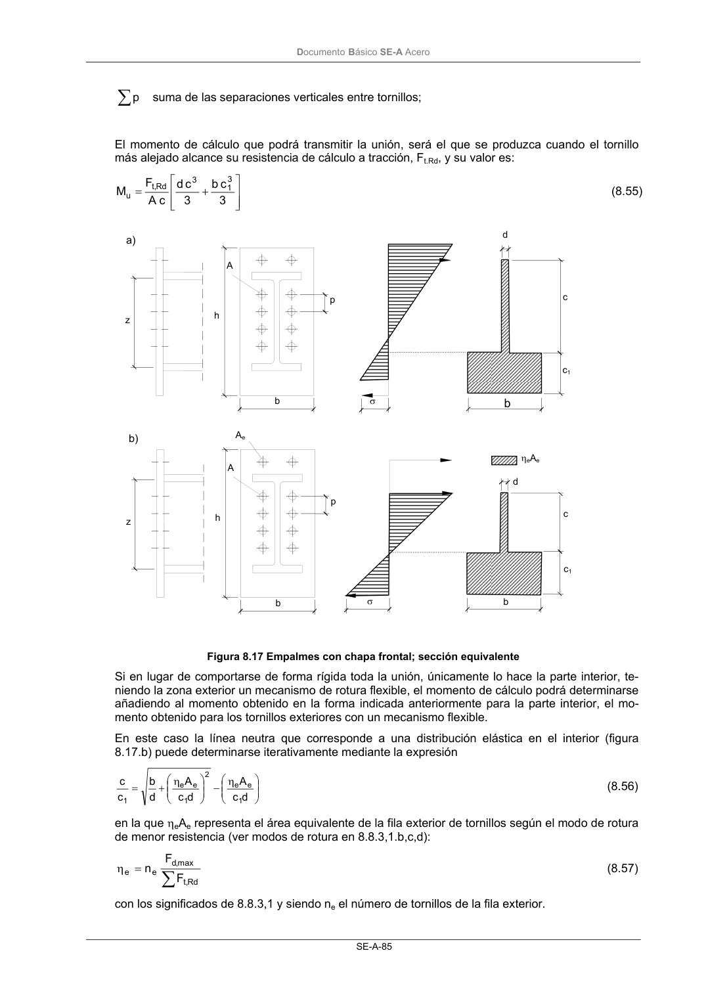
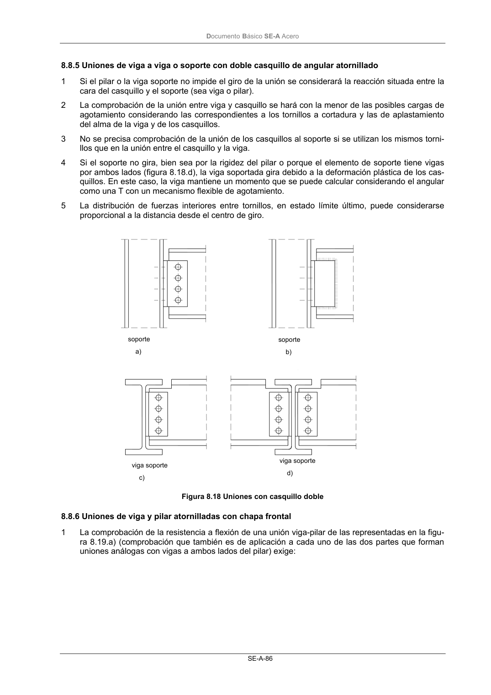

DB-SE-A · Fragmento de PDF p87 · versión 2007-10-23 · capa oficial
Formatos: JSON compacto · Markdown · PDF fuente
Ámbito del documento · texto del ámbito · documento y tablas
ID técnico a0129 · PDF pág. 87-88 · jerarquía no validada por persona · no es capítulo: sin_linea_de_encabezado · padre: raíz · literal original en el contenido: «∑»
∑ = η Rd ,t max ,d e e F F n (8.57) con los significados de 8.8.3,1 y siendo ne el número de tornillos de la fila exterior. p A h z b b c c1 d σ b σ c d ηeAe a) b) p A h z b Ae c1 DocumentoBásico SE-A Acero SE-A-86


PDF fuente redistribuible: copia fiel enlazada en esta página (SHA256 verificado).